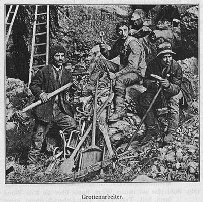

- Main page
- Topic and objectives
- Programme
- Technical information
- Organizing committee
- Location of venue
- Places to stay
- Places to eat
- General information
- Registration
- Archive of past schools


Organizing committee
- Franci Gabrovšek
- Petra Gostinčar
- Martin Knez
- Janja Kogovšek
- Peter Kozel
- Andrej Mihevc
- Janez Mulec
- Bojan Otoničar
- Metka Petrič
- Tanja Pipan
- Mitja Prelovšek
- Tadej Slabe
- Stanka Šebela
- Nadja Zupan Hajna
- Nataša Viršek Ravbar
Programme committee
- Alica Chroňáková
- Marjutka Hafner
- Václav Krištůfek
- Alenka Mauko
- Janez Mulec
- Colin Murrell
- Lejla Pašić
- Blaž Stres
- Annette Summers Engel